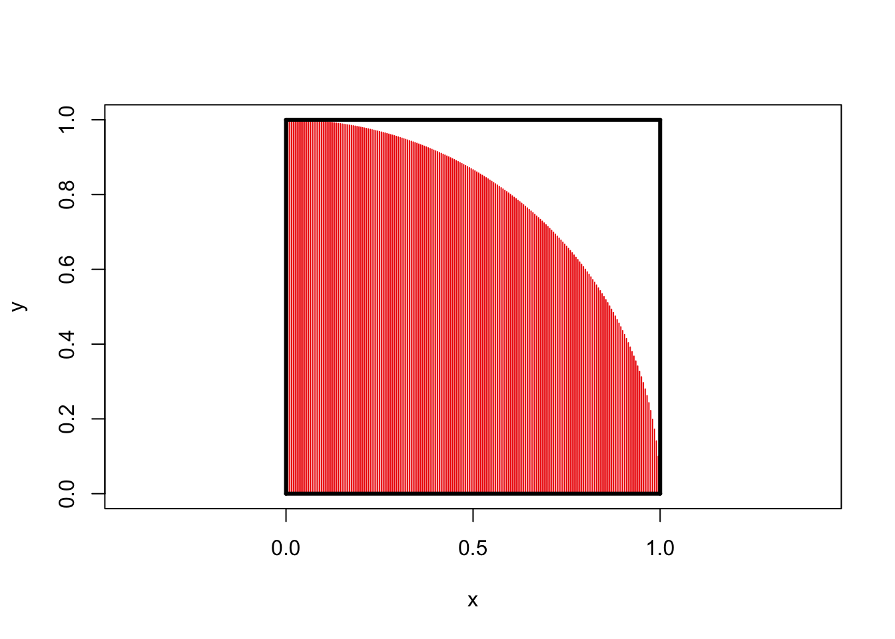
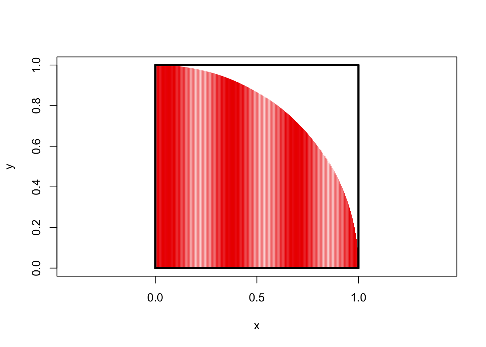

x <- seq(0, 1, length.out=201)
y <- sqrt(1 - x^2)
plot(x, y,type="h", col="red2", asp=1, xlim=c(0, 1))
segments(c(0, 0, 1, 0),
c(0, 0, 0, 1),
c(0, 1, 1, 1),
c(1, 0, 1, 1),
lwd=3)
\[\newcommand{\P}{\mathbb{P}} \newcommand{\E}{\mathbb{E}} \newcommand{\V}{\mathbb{V}} \newcommand{\R}{\mathbb{R}} \newcommand{\bx}{\mathbf{x}} \newcommand{\by}{\mathbf{y}} \newcommand{\bX}{\mathbf{X}} \newcommand{\bY}{\mathbf{Y}} \newcommand{\bZ}{\mathbf{Z}}\]
In this set of notes, we begin our study of random vectors. Before we discuss random vectors, let’s first review how vectors in general behave.
In mathematics, a vector - random or otherwise - is a fixed-length ordered collection of numbers. When we want to be precise about the size of a vector, we often call it a “tuple”, e.g., a length-three vector is a “triple”, a length-four vector is a “4-tuple”, a length-five vector is a “5-tuple” etc..
So, these are all vectors:
When we want to talk about the set of vectors of a given size, we use the Cartesian product of sets. For two sets, \(A, B\), the product set \(A \times B\) is the set of all pairs, with the first element from \(A\) and the second from \(B\). In mathematical notation,
\[A \times B = \left\{(a, b): a \in A, b \in B\right\} \]
This set-builder notation is read as follows: “The Cartesian Product of \(A\) and \(B\) is the set of all pairs \((a, b)\) such that \(a\) is in \(A\) and \(b\) is in \(B\).”
If \(A\) and \(B\) are the same set, we define a Cartesian power as follows:
\[A^2 = A \times A = \left\{(a_1, a_2): a_1 \in A, a_2 \in A\right\}\]
Note that even though the sets \(A\) and \(A\) in this product are the same, the elements in each pair may vary. For example, if \(A = \{1, 2, 3\}\), we have
\[A^2 = \left\{(1, 1), (1, 2), (1, 3), (2, 1), (2, 2), (2, 3), (3, 1), (3,2), (3, 3)\right\}\]
Note that vectors are ordered pairs so \((2, 1) \neq (1, 2)\). From here, it should be pretty easy to convince yourself that set sizes play nicely with Cartesian products:
The most common set of vectors we use are those where each element is an arbitrary real number. The set of vectors of length \(n\) (\(n\)-tuples) is thus \(\R^n\). We rarely mix vectors of different lengths, so we don’t really have a name or notation for the “combo pack” \(\R^2 \cup \R^3 \cup \R^4\).
Conventionally, vectors are written in bold (if on a computer) or with a little arrow on top (hand written): so a vector called “x” would be denoted \(\mathbf{x}\) or \(\vec{x}\). The elements of \(\bx\) are denoted by subscripts \(\bx = (x_1, x_2, \dots, x_n)\).
We have three arithmetic operations we can perform on general vectors. The simplest is scalar multiplication. A scalar is a non-vector number, i.e., a ‘regular’ number. Scalar multiplication consists of applying the scalar independently to each element of a vector.
\[\alpha \bx = \alpha(x_1, x_2, \dots, x_n) = (\alpha x_1, \alpha x_2, \dots, \alpha x_n)\]
For example, if \(\bx = (3, 4)\) and \(\alpha = 2\), we have \[\alpha \bx = (6, 8)\]
Note that the output of scalar multiplication is always a vector of the same length as the input.
We also have the ability to add vectors. This again is performed element-wise.
\[\bx + \by = (x_1, \dots, x_n) + (y_1, \dots, y_n) = (x_1 + y_1, \dots, x_n + y_n) \]
Note that we can’t add vectors of different lengths (recall our “no mixing” rule) and the output length is always the same as the input lengths.
Finally, we have the vector inner product, defined as:
\[\langle \bx, \by \rangle = x_1y_1 + x_2y_2 + \dots + x_ny_n \]
You might have seen this previously as the “dot” product. The inner product takes two length-\(n\) vectors and gives back a scalar. This structure might seem a bit funny, but as we’ll see below, it’s actually quite useful.
You might ask if there’s a “vector-out” product: there is one, with the fancy name “Hadamard product”, but it doesn’t play nicely with other tools, so we don’t use it very much.
These tools play nicely together:
We sometimes want to think about the “size” of a vector, analogous to the absolute value of a scalar. In scalar-world, we say “drop the sign” but there’s not an obvious analogue to a sign for a vector. For instance, if \(\bx = (3, -4)\) is \(\bx\) “positive”, “negative” or somewhere in beetween?
We note a trick from scalar-land: \(|x| = \sqrt{x^2}\). We can use the same idea for vectors:
\[ \|\bx\| = \sqrt{\langle \bx, \bx\rangle} = \sqrt{\sum_{i=1}^n x_i^2}\]
This quantity, \(\|\bx\|\), is called the norm or length of a vector. We use the double bars to distinguish it from the absolute value of a scalar, but it’s fundamentally the same idea.
In \(\R^2\), we recognize this formula for length as the Pythagorean theorem:
\[ \|(3, 4)\| = \sqrt{3^2 + 4^2} = \sqrt{25} = 5 \]
We also sometimes want to define the angle between two vectors. We can define this as:
\[ \cos \angle(\bx, \by) = \frac{\langle \bx, \by\rangle}{\|\bx\|\|\by\|} \Leftrightarrow \angle(\bx, \by) = \cos^{-1}\left(\frac{\langle \bx, \by\rangle}{\|\bx\|\|\by\|}\right)\]
We won’t use this formula too often, but it’s good to have it.
Just like a vector is a ordered collection of “regular” numbers, a random vector is an ordered collection of random variables.
Where do random vectors come from? Everywhere!
Essentially any data collection can be thought of “vectorly”. If we record multiple pieces of information for each sample, each sample gives us a vector of information.
How might we begin to specify probabilities on vectors? We have essentially two approaches. We can begin from a definition of how we want probabilities to behave, extending the rules we developed for random variables, or we can assemble a distribution on a vector from distributions on variables defined in just the right way. Both of these will be fruitful, but let’s begin with the axiomatic approach.
In our discussion of random variables, we highlighted the role of the CDF as a tool that can unify both discrete and continuous variates. Our definition of random variables - real-valued random quantities - guaranteed that quantities like \(\P(X \leq x)\) were always defined.
Unfortunately, as we move from \(\R\)-valued to \(\R^n\)-valued quantities, it’s not quite as simple to make sense of statements like \(\bX \leq \bx\) (bold here for vectors). Most commonly, we define vector inequalities elementwise, so
\[\bX \leq \bx \implies X_1 \leq x_1 \text{ and } X_2 \leq x_2 \dots \text{ and} X_n \leq x_n\]
Unfortunately, this has several limitations. Most notably, we no longer have the “three-way” logic of standard inequalities, it is possible for neither \(\bX \leq \bx\) or \(\bX > \bx\) to be true: some components can be less than while others can be greater than. Even so, we could still try to build a multi-dimensional CDF for \(\bX\), \(F_{\bX}(\bx) = \P(\bX \leq \bx)\).
We know that as \(\bx \to \infty\), we must have \(F_{\bX}((\infty, \infty, \dots, \infty)) = 1\) and that \(F_{\bX}\) must be monotonically increasing in each component. (Why?) Unfortunately, that’s not a particularly nice type of function, so it’s hard to naturally come up with examples like this.
It may be more fruitful to “piece-together” multivariate distributions from univariate components. To do so, we’ll actually put the PDF front and center in the multivariate case.
The properties we expect of a PDF translate naturally to the multivariate case:
As always, replace the integral with a sum if \(\bX\) is discrete.
The only wrinkle here is working with the multivariate integral, \(\int_{\R^n}\), so let’s do some practice problems.
Let’s first consider a 2D uniform distribution on the unit square \([0, 1]^2\), that is, the set of all \((x, y)\) such that \(0 \leq x \leq 1\) and \(0 \leq y \leq 1\) (with no restrictions on \(x, y\) together). Since we want to build a uniform distribution, all we can assume is \[f_{(x, y)}(x, y) = c\] for some constant \(c \geq 0\). We know that this quantity must integrate to 1, so let’s work out the integral:
\[\begin{align*} 1 &= \iint_{[0, 1]^2} c\,\text{d}x\,\text{d}y \\ &= c \iint_{[0, 1]^2} \text{d}x\,\text{d}y \\ &= c \int_{0}^1 \int_0^1 \text{d}x\,\text{d}y \\ &= c \int_{0}^1 \left.x\right|_0^1\,\text{d}y \\ &= c \int_{0}^1 1\text{d}y \\ &= c \left(\left.y\right|_0^1\right) \\ &= c \\ \implies c &= 1 \end{align*}\]
so the uniform distribution on the square has constant PDF 1. This is quite nice: by extending the above argument, we can actually see that for any set \(A \subseteq [0, 1]^2\), \(\P(\bX \in A) = \text{Area}(A)\). This justifies our intuition for uniform distributions.
We can extend this idea to a fun special case: let \(A\) be a quarter circle embedded in the unit square:
x <- seq(0, 1, length.out=201)
y <- sqrt(1 - x^2)
plot(x, y,type="h", col="red2", asp=1, xlim=c(0, 1))
segments(c(0, 0, 1, 0),
c(0, 0, 0, 1),
c(0, 1, 1, 1),
c(1, 0, 1, 1),
lwd=3)
Clearly the square has area 1 while the circle has area \(\pi/4\).
If we were to pick a point uniformly from within the square, there is thus a \(\pi/4\) chance that it falls inside the red area. This is a bit impractical to do by hand (though people did it back in the day!), but quite easy to do on a computer:
n <- 1e6 # Generate one million points IID uniform on the unit square
X <- runif(n, min=0, max=1)
Y <- runif(n, min=0, max=1)
# Check fraction that are in the red area
in_red <- (X^2 + Y^2) < 1
P_red <- mean(in_red)
print(P_red)[1] 0.786029From this, we can actually ‘back out’ the value of \(\pi\) as \(4 * \hat{\P}(\text{red})\):
Not terrible!
For a bit of review, let’s compute the variance of our \(\pi\)-estimator.
Define \[\hat{\Pi}_n = 4 * \text{Fraction of points in red area} = \frac{4}{n}\sum_{i=1}^n 1_{\text{Red Area}}(X_i)\]
Here, we use the average indicator of the red area to compute the fraction of points in the red zone. Since each point is selected randomly, the indicators are independent and hence we can compute the variance quite simply:
\[\begin{align*} \V[\hat{\Pi}_n] &= \V\left[\frac{4}{n}\sum_{i=1}^n 1_{\text{Red Area}}(X_i)\right] \\ &= \frac{16}{n^2}\V\left[\sum_{i=1}^n 1_{\text{Red Area}}(X_i)\right] \\ &= \frac{16}{n^2}\sum_{i=1}^n \V[1_{\text{Red Area}}(X_i)] \\ &= \frac{16}{n^2}\sum_{i=1}^n \V[\text{Bernoulli}(\pi/4)] \\ &= \frac{16}{n^2}\sum_{i=1}^n \frac{\pi}{4}\left(1-\frac{4}{\pi}\right) \\ &= \frac{16}{n^2} * n * \frac{\pi}{4}\left(1-\frac{\pi}{4}\right) \\ &= \frac{4\pi}{n}\left(1-\frac{\pi}{4}\right) \\ &\approx \frac{2.7}{n} \end{align*}\]
So our example above with one million points has a variance of about 0.0003%, giving a standard deviation of 0.0016. That means that, very roughly, we get about 3 digits of accuracy from one million points, consistent with above.
We note that this analysis requires us to know the probability we are trying to estimate. That’s not a super-practical assumption, but if we recall that the Bernoulli variance is bounded above by \(0.25\), we can get an upper bound of
\[\V[\hat{\Pi}_n] \leq \frac{4}{n}\]
which really isn’t too much worse than the “true” value.
This approach might seem a bit crazy - and it definitely is not a very efficient way to compute \(\pi\) - but it’s actually incredibly useful. Variants of this approach, known as the “Monte Carlo” approach, are used throughout advanced science and engineering to compute probabilities of adverse events which depend on uncertain physical parameters. We will say more about MC methods later in this course.
One easy way to create vector distributions is via product distributions. Given a random variable \(X\) and a second random variable \(Y\), mutually independent, and each with PDF \(f_X(\cdot)\) and \(f_Y(\cdot)\) respectively, we can create a new random variable \(\bZ = (X, Y)\). The PDF of \(\bZ\) is given by
\[f_{\bZ}(\bz) = f_{(X, Y)}((z_1, z_2)) = f_{X}(z_1)f_{Y}(z_2)\]
This structure, where we can break things apart into two terms is called a product distribution and it’s the most general form of independence we consider in this course. In fact, you can basically take this as as a definition of independence. Two random variables \(X, Y\) are independent if their joint PDF is just the product of their separate PDFs.
Recall that, in our initial discussion of independent events, we said \(A, B\) are independent if \(\P(A \cap B) = \P(A)\P(B)\). If you squint, this looks a lot like our definition of a product distribution. We can make this (semi-)formal:
\[\begin{align*} \P(X \in A_X, Y \in A_Y) &= \int_{A_X}\int_{A_Y} f_{(X, Y)}(x, y)\,\text{d}y\,\text{d}x \\ &= \int_{A_X}\int_{A_Y} f_X(x)f_Y(y)\,\text{d}y\,\text{d}x \tag{Assuming product structure}\\ &= \int_{A_X} f_X(x)\int_{A_Y}f_Y(y)\,\text{d}y\,\text{d}x \tag{Factor out $x$-terms}\\ &= \int_{A_X} f_X(x)\P(Y \in A_Y)\,\text{d}x \tag{Integrate $y$-terms}\\ &= \P(Y \in A_Y)\int_{A_X} f_X(x)\,\text{d}x \tag{Factor out constant}\\ &= \P(Y \in A_Y)\P(X \in A_X) \tag{Integrate $x$-terms} \end{align*}\]
Since we made no assumptions on the shapes of \(A_X, A_Y\), we see that this argument holds for any events defined in terms of one vector component only.
Let’s stay this again because it’s important:
If the random vector \((X, Y)\) has a PDF that has a product structure, \(X\) and \(Y\) are independent and so are any pair of events based on them separately.
This may be a bit counterintuitive:
Can you see why? What about \(4 + 2\cos(x) + 2\sin(y) + \cos(x)\sin(y) = (2+\cos(x))(2+\sin(y))\)?
At the beginning of this course, we emphasized that the conditions under which an “and” statement could be evaluated by multiplying probabilities were a bit subtle: we have now fully expressed these conditions using the notions of independence and factorizability.
In other circumstances, we may have a joint PDF and want to only look at one component. The “induced” distribution that we get by ignoring \(Y\) and only looking at \(X\) is called the marginal distribution.
To build up the mathematics of marginal distributions, let’s introduce the special value \(\textsf{ANY}\), which does exactly what it sounds like it should. Use of \(\textsf{ANY}\) lets us express the marginal distribution PDF from the joint PDF:
\[f_{X}(x) = f_{(X, Y)}(x, \textsf{ANY})\].
Here, since we don’t care about the value of \(Y\) (\(\textsf{ANY}\)), we integrate over its whole range to find:
\[f_{X}(x) = \int f_{(X, Y)}(x, y)\,\text{d}y\]
The “x” is not integrated since we’re keeping it “free” in the marginal PDF. Of course, if we have a product structure, this is particularly nice:
\[f_{X}(x) = \int f_{(X, Y)}(x, y)\,\text{d}y = f_X(x) \int f_Y(y)\,\text{d}y = f_X(x)\]
So the marginal distribution of two independent random variables is “just” the factor we care about. (Independence makes life so easy!)
What about a case without independence? Suppose we have \(f_{(X, Y)}(x, y) c(x+y)\). We first want to find the constant \(c\)
TODO
TODO
TODO